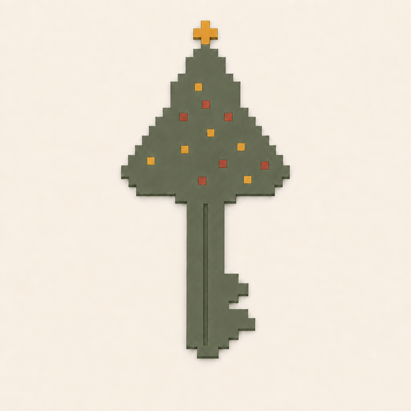
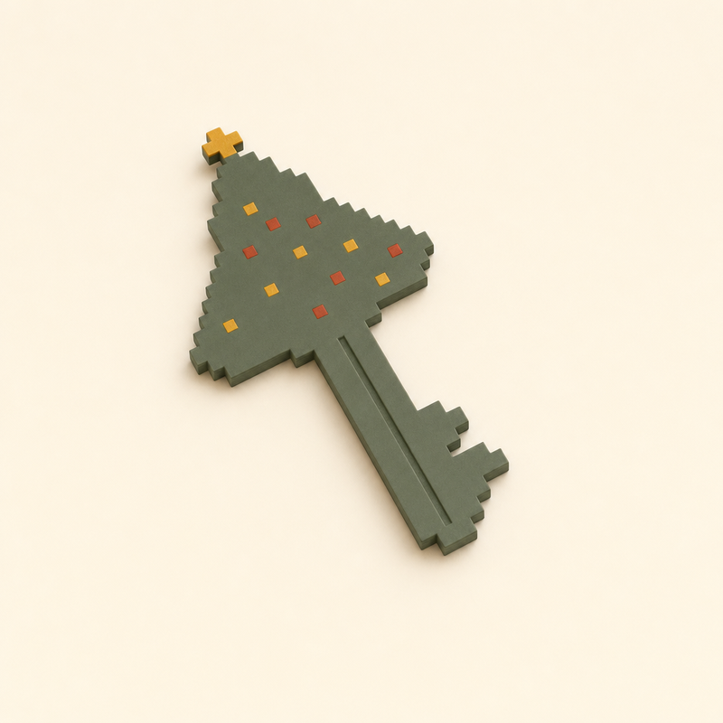
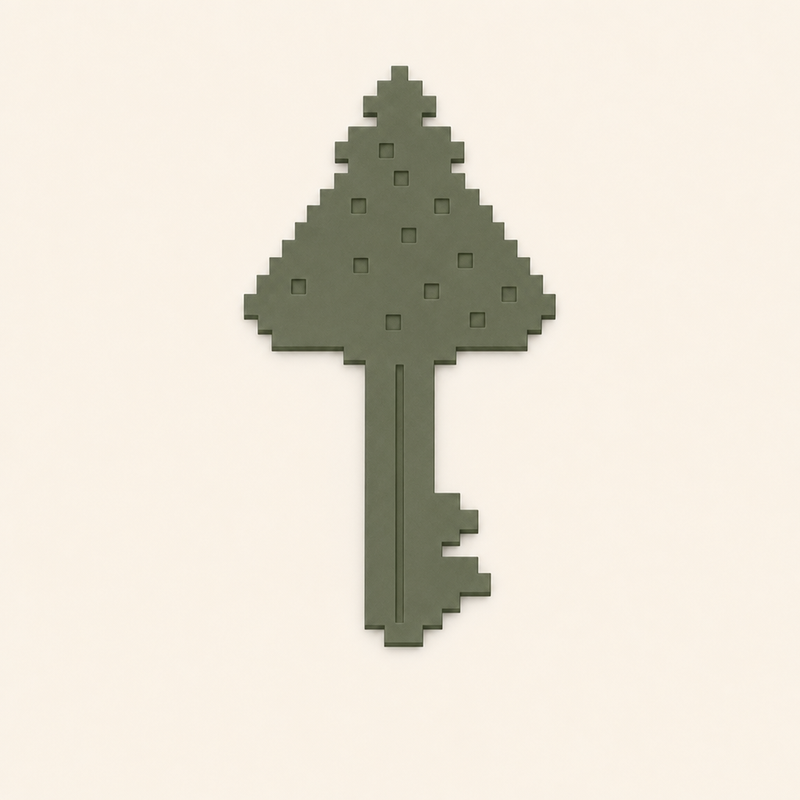
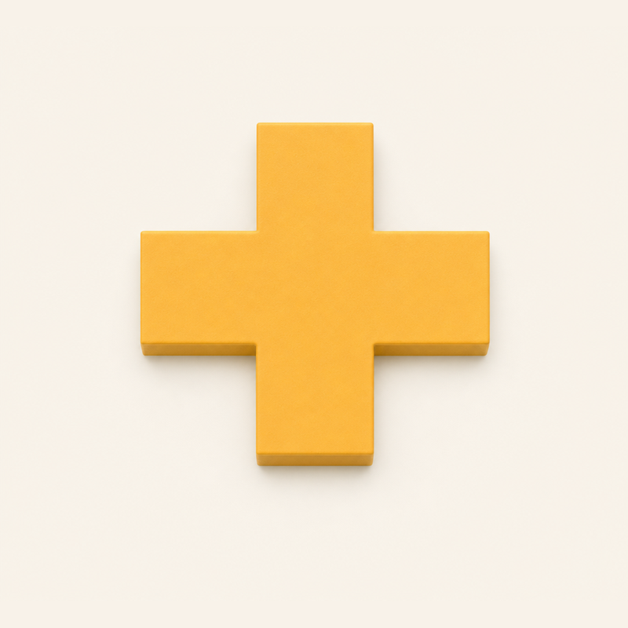
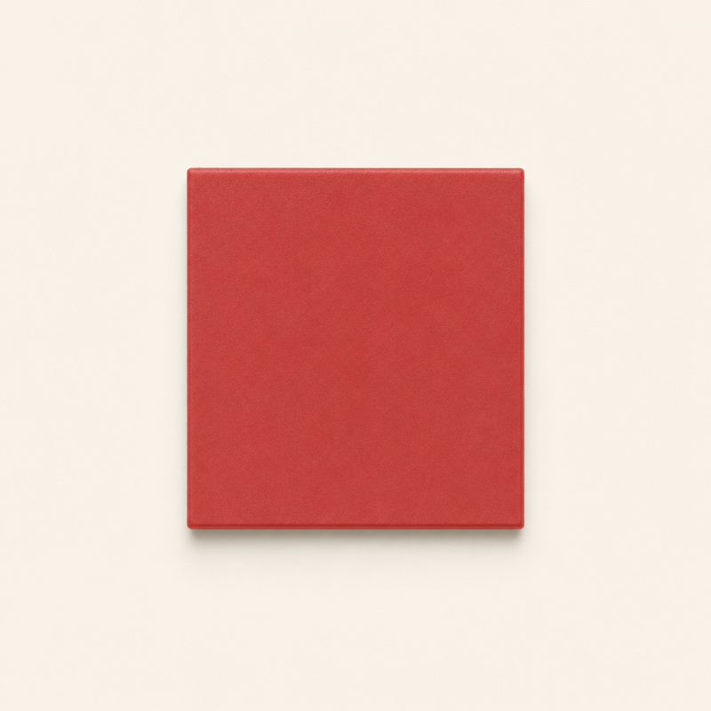

Pixel Tree Key ★
Bộ ảnh tham chiếu để duyệt. Bản in sẽ được đo và so với đúng các ảnh này; duyệt ảnh là duyệt thiết kế.
82 × 41 × 3.5 mm≈ 4 gchip NFC 21.5 × 11.5 kín bên trongin nhiều màu một lần
TỔNG THỂ

ref-01 cả chiếc chìaNhìn thẳng từ trên xuống, ngôi sao ở trên (-90, 90). Ảnh dùng để so bản in.

minh hoạ trên bànChỉ để hình dung; không dùng để so.
TỪNG PHẦN

ref-02 thân chìa1 chiếc; xanh. 12 hốc vuông chờ quả châu. Nhìn từ trên (-90, 90).

ref-03 ngôi sao1 chiếc; vàng, dày bằng thân. Nhìn từ trên (-90, 90).

ref-04 quả châu12 chiếc: 6 đỏ, 6 vàng, phẳng mặt với thân. Nhìn từ trên (-90, 90).
KHÁC SO VỚI ẢNH X01
- Màu xanh là nhựa mờ có sẵn, ngả xanh rêu hơn xanh thông của x01.
- Quả châu và ngôi sao phẳng mặt với thân (không nổi), nên cả chiếc là một tấm dày 3.5 mm.
- Quả châu đỏ trên cùng dịch xuống một chút để không chạm quả vàng bên cạnh (cần chỗ cho nhựa in).
- Cổ nối ngôi sao rộng 2.5 mm cho chắc; đây là chỗ dễ gãy nhất nếu làm rơi.
- Chip nằm kín trong phần dưới của cây, không nhìn thấy; máy in tạm dừng một lần để thả chip vào.
Nếu ổn, trả lời duyệt. Nếu muốn đổi hình, số quả châu, màu hay tỉ lệ, nói điều cần đổi.